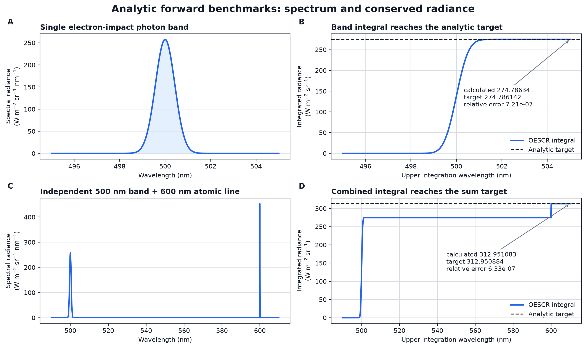
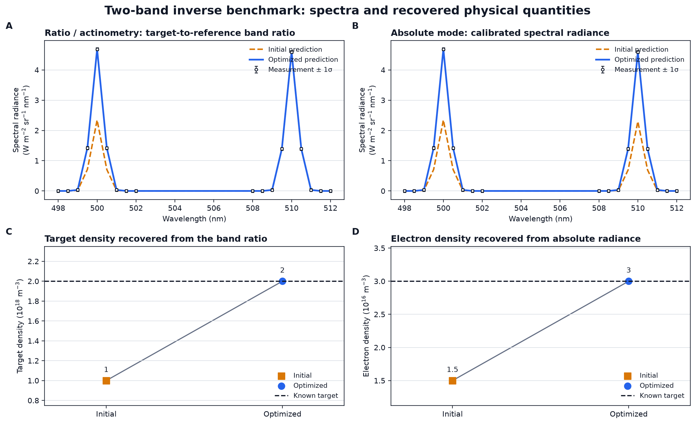
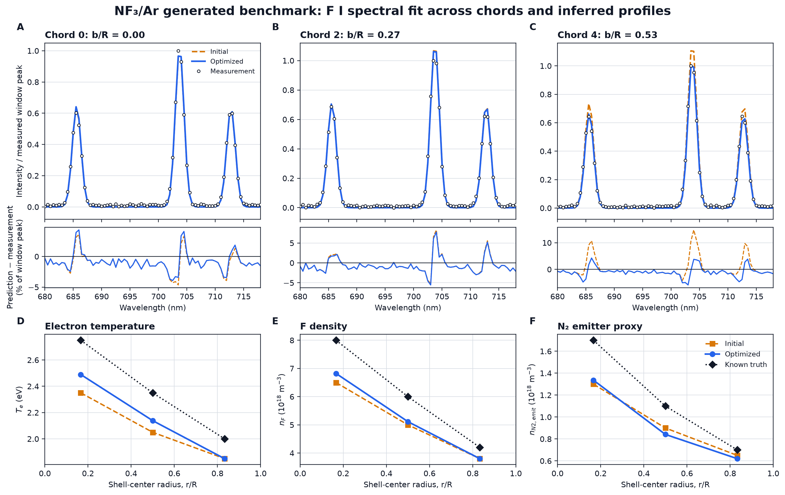
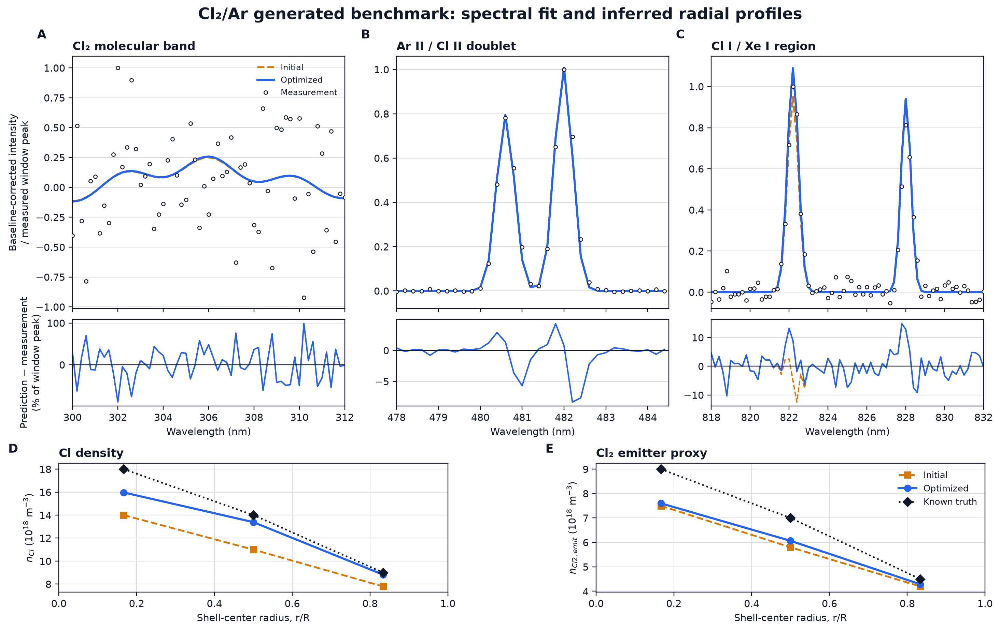

OESCR ベンチマーク図版
観測／解析目標、初期計算、最適化後計算、残差、既知真値を直接比較した静的図版です。NF₃/Ar と Cl₂/Ar は生成データ上の自己整合性であり、外部実験精度の証明ではありません。




観測／解析目標、初期計算、最適化後計算、残差、既知真値を直接比較した静的図版です。NF₃/Ar と Cl₂/Ar は生成データ上の自己整合性であり、外部実験精度の証明ではありません。



